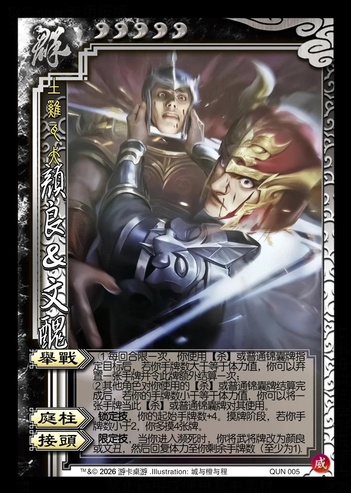

点击卡面查看大图
群
威颜良&文丑
♥5土鸡瓦犬
举战
①每回合限一次，你使用【杀】或普通锦囊牌指定目标后，若你手牌数大于等于体力值，你可以弃置一张手牌并令此牌额外结算一次；
②其他角色对你使用的【杀】或普通锦囊牌结算完成后，若你的手牌数小于等于体力值，你可以将一张手牌当此【杀】或普通锦囊牌对其使用。
庭柱锁定技
锁定技，你的起始手牌数+4。摸牌阶段，若你手牌数小于2，你多摸4张牌。
接头限定技
限定技，当你进入濒死时，你将武将牌改为颜良或文丑，然后回复体力至你剩余手牌数（至少为1).